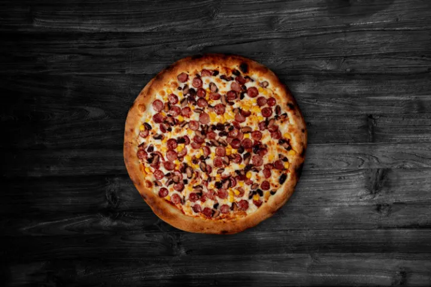
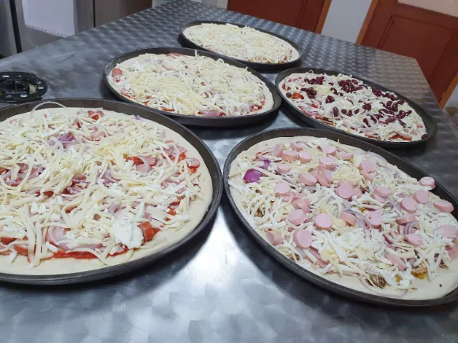

Pizza · Burger Bőséges menük
Pizzák, brutál burgerek és bőséges menük — hatalmas adagokban, elérhető áron. Elvitelre és házhozszállításra, minden nap 13 órától.

Amit nálunk kapsz
Egy konyha,
ami nem spórol a tányéron
A Tommy's Pizza & Food a Berde Mózes utcában készíti a pizzákat, burgereket és menüket — minden nap 13 órától zárásig. Nem éttermi ceremónia: ide azért jössz, mert éhes vagy, és tudod, hogy amit kapsz, az tényleg megtölt.
Pizza mellett brutál burgerek és bőséges menük is — laktatóak, finomak, mindenkinek. Elvitelre vagy házhozszállítással, ahogy neked jobb.

Pizzáink
Family / Családi
a vendég kívánsága szerintExtra rátétek
- sonka
- szalámi
- cérnakolbász
- császárszalonna
- virsli
- zöldségek
- sajtok
Öntetek
- ketchup
- csípős ketchup
- tartár szósz
- fokhagymás öntet
Brutál burgerek
Menüben szalmakrumplival és burger szósszal.
Kiszállítás
adat érkezikHova szállítunk
Székelykeresztúr és a környező falvak
egyeztetés alatt
Galéria


Hol találsz meg
Gyere be,
vagy hívj minket
A Berde Mózes utcában vagyunk. A térképen pontosan látod, hol — és ha telefonon rendelnél, egy kattintás.
- Cím
- Berde Mózes u.535400 Székelykeresztúr, Hargita megye
- Telefon
- 0759 614 325
- Szolgáltatás
- Elvitel és házhozszállítás
Rendelj még ma — és kóstold meg, miért térnek vissza vendégeink újra és újra
0759 614 325